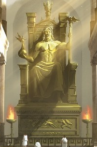

Статуя Зевса Олимпийского

V век до нашей эры. Город Олимпия считался во всей Древней Греции священным. Здесь располагались храмы и святилища богов, именно здесь начали проводиться Олимпийские игры. Главной святыней Олимпии был храм верховного бога Зевса со статуей работы великого скульптора Фидия.
Высота сидящего на троне бога достигала 17 метров. Основа статуи вырезалась из дерева, потом на неё накладывали искусно выточенные из слоновой кости пластинки и чеканное золото. Существует легенда о том, что когда Фидий закончил свой труд, то подошёл к статуе и спросил: «Ну что, Зевс, ты доволен?» В этот момент раздался удар грома, и по мраморному полу перед троном пробежала трещина.
Текли века. Частые в Греции землетрясения разрушили большинство храмов Олимпии, однако статуя Зевса пережила многие из них. Византийские императоры перевезли её со всеми предосторожностями в Константинополь, хотя религия языческих богов уже сменилась христианством и изображения прежних кумиров были не в чести. В V веке нашей эры пожар уничтожил дворец императора Феодосия, где находилась статуя. Деревянный колосс стал добычей огня. Но по сохранившимся свидетельствам тех времён, рисункам и записям учёные смогли узнать, как выглядело творение Фидия, просуществовавшее почти тысячелетие.